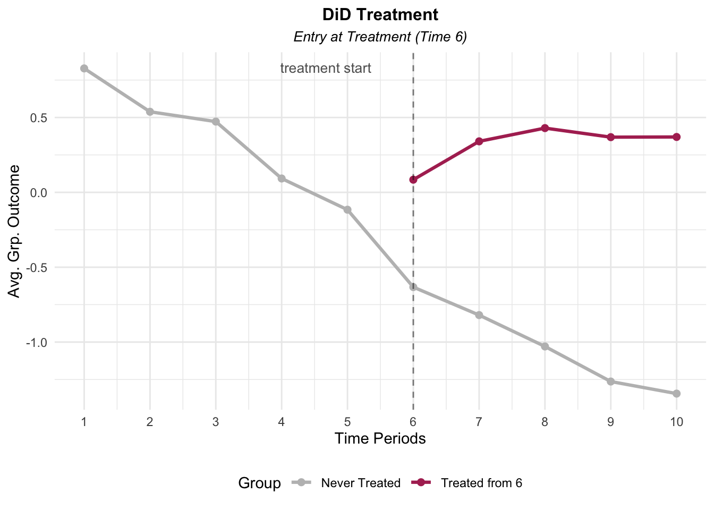
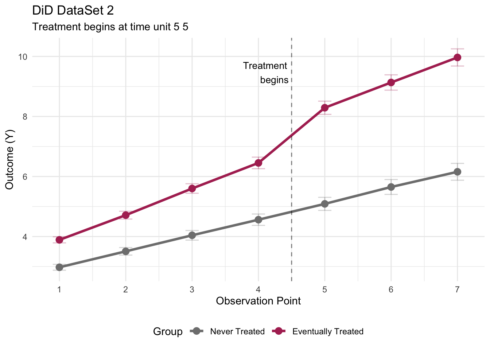
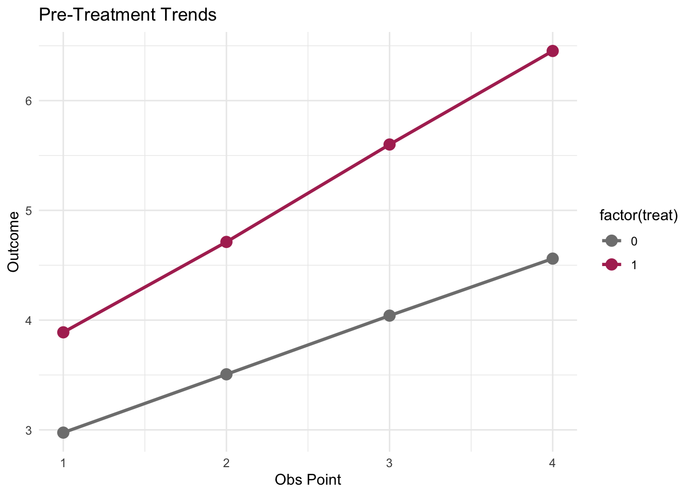

── Attaching core tidyverse packages ──────────────────────── tidyverse 2.0.0 ──
✔ dplyr 1.1.4 ✔ readr 2.1.5
✔ forcats 1.0.0 ✔ stringr 1.5.1
✔ ggplot2 3.5.1 ✔ tibble 3.2.1
✔ lubridate 1.9.4 ✔ tidyr 1.3.1
✔ purrr 1.0.4
── Conflicts ────────────────────────────────────────── tidyverse_conflicts() ──
✖ dplyr::filter() masks stats::filter()
✖ dplyr::group_rows() masks kableExtra::group_rows()
✖ dplyr::lag() masks stats::lag()
ℹ Use the conflicted package (<http://conflicted.r-lib.org/>) to force all conflicts to become errorsAssignment 2
[1] 2001. DID I
Outcome Means by Time
means <- data %>%
group_by(time, treat) %>%
summarise(
ymean = mean(y, na.rm = TRUE),
yse = sd(y, na.rm = TRUE) / sqrt(n()),
n = n(),
.groups = 'drop'
) did_plot <- ggplot(means, aes(x = time, y = ymean,
color = factor(treat),
group = factor(treat))) +
geom_line(size = 1.1) +
geom_point(size = 2) +
geom_vline(xintercept = 6, linetype = "dashed", alpha = 0.5)+
annotate("text", x = 5.5, y = Inf, label = "treatment start",
vjust = 2, hjust = 1.1, size = 3.5, alpha = 0.7) +
scale_color_manual(values = c("0" = "gray", "1"= "maroon"),
labels = c("Never Treated", "Treated from 6")) +
scale_x_continuous(breaks = 1:10)+
labs(
title = "DiD Treatment",
subtitle = "Entry at Treatment (Time 6)",
x = "Time Periods",
y = "Avg. Grp. Outcome",
color = "Group"
)+
theme_minimal()+
theme(
legend.position = "bottom",
plot.title = element_text(hjust = 0.5, size = 12, face = "bold"),
plot.subtitle = element_text(hjust = 0.5, size = 10, face = "italic")
)Warning: Using `size` aesthetic for lines was deprecated in ggplot2 3.4.0.
ℹ Please use `linewidth` instead.print(did_plot)
Estimate for the Treatment
did_means <- data %>%
mutate(post = ifelse(time >= 6, 1, 0)) %>%
group_by(treat, post) %>%
summarise(
ymean = mean(y, na.rm=TRUE),
n=n(),
.groups = 'drop'
)pre_control <-did_means %>% filter(treat ==0, post ==0) %>% pull(ymean)
post_control <-did_means %>% filter(treat==0, post == 1) %>% pull(ymean)post_treat <- did_means%>%filter(treat==1,post==1)%>%pull(ymean)didest <- post_treat - post_controldata <- data %>%
mutate(post = ifelse(time >= 6, 1, 0))
m1 <- lm(y~treat+post + treat:post, data=data)
#treatment effect is the treat coefficient?
did_est <- coef(m1)["treat"]
did_se <- summary(m1)$coefficients["treat", 2]
did_tstat <- summary(m1)$coefficients["treat",3]
did_pval <- summary(m1)$coefficients["treat",4]
#Cis
cil<-did_est - 1.96*did_se
ciu<-did_est + 1.96*did_seResults
Treatment Effect: 1.3364 Std Error: 0.0508 T-Stat: 26.295 pVal: 0 CI: [ 1.2368 , 1.436 ]Discussion
Choices – After realizing this is a DiD structure where the treated units are only in the sample upon being treated, the average treatment effect is captured by the “treat” coefficient estimate (it’s collinear with the interaction, and a change in unit of the treatment variable implies the same change in the post treatment variable (both from 0 to 1)).
Results – The treatment effect (1.34) means that the outcomes (y) those individuals who got the treatment are on average 1.34 units greater than those outcomes of individuals who did not get the treatment, after the treatment.
Substantively, I find the setup (no pre-treatment treated but parallel trends test) confusing. Its possible I’m just doing this wrong/missing something glaring. Otherwise, the issue is that we’re making an assumption about how the treated would have behaved before being treated, without being able to know what was up pre-treatment. In other words, it seems that to interpret this causally requires an assumption that the treated were like the untreated, before the 6th time period.
2. DiD II
Patterns + Suggestions from the Data
stru <- data2 %>%
group_by(id) %>%
summarise(
treat_group = max(treat),
ever_treated = max(D),
when_treated = ifelse(max(D) == 1, min(time[D == 1]), NA),
gender = first(X)
)
#str(data2)
#dim(data2)
#nrow(data2)tstart <- data2 %>%
filter(D == 1) %>%
group_by(time) %>%
summarise(n_treated = n()) %>%
arrange(time)
#print(tstart)# x time units
balance <- data2 %>%
count(id, treat) %>%
count(n, treat)Storing counts in `nn`, as `n` already present in input
ℹ Use `name = "new_name"` to pick a new name.#print(balance)did_means <- data2 %>%
group_by(time, treat) %>%
summarise(
mean_y = mean(Y, na.rm = TRUE),
se_y = sd(Y, na.rm = TRUE) / sqrt(n()),
n = n(),
.groups = 'drop'
)
treatment_start <- min(data2$time[data2$D == 1])
did_plot <- ggplot(did_means,
aes(x = time, y = mean_y,
color = factor(treat),
group = factor(treat))) +
geom_line(size = 1.2) +
geom_point(size = 3) +
geom_vline(xintercept = treatment_start - 0.5,
linetype = "dashed", alpha = 0.5) +
geom_errorbar(aes(ymin = mean_y - 1.96*se_y,
ymax = mean_y + 1.96*se_y),
width = 0.2, alpha = 0.3) +
scale_color_manual(values = c("0" = "gray50", "1" = "maroon"),
labels = c("Never Treated", "Eventually Treated")) +
scale_x_continuous(breaks = 1:7) +
annotate("text", x = treatment_start - 0.5,
y = max(did_means$mean_y) * 0.95,
label = "Treatment\nbegins",
hjust = 1.1, size = 3.5) +
labs(title = "DiD DataSet 2",
subtitle = paste("Treatment begins at time unit 5", treatment_start),
x = "Observation Point",
y = "Outcome (Y)",
color = "Group") +
theme_minimal() +
theme(legend.position = "bottom")
print(did_plot)
#testing to test for parallel trends
pre_treatment_data <- data2 %>%
filter(time < treatment_start)
# Test for parallel trends
pt_model <- lm(Y ~ factor(time) * treat, data = pre_treatment_data)
summary(pt_model)
Call:
lm(formula = Y ~ factor(time) * treat, data = pre_treatment_data)
Residuals:
Min 1Q Median 3Q Max
-4.5448 -1.3081 -0.0643 1.3279 4.9775
Coefficients:
Estimate Std. Error t value Pr(>|t|)
(Intercept) 2.97504 0.07585 39.222 < 2e-16 ***
factor(time)2 0.53131 0.10727 4.953 7.60e-07 ***
factor(time)3 1.06597 0.10727 9.937 < 2e-16 ***
factor(time)4 1.58539 0.10727 14.779 < 2e-16 ***
treat 0.91380 0.10717 8.527 < 2e-16 ***
factor(time)2:treat 0.29223 0.15156 1.928 0.0539 .
factor(time)3:treat 0.64529 0.15156 4.258 2.11e-05 ***
factor(time)4:treat 0.97813 0.15156 6.454 1.22e-10 ***
---
Signif. codes: 0 '***' 0.001 '**' 0.01 '*' 0.05 '.' 0.1 ' ' 1
Residual standard error: 1.723 on 4128 degrees of freedom
Multiple R-squared: 0.2744, Adjusted R-squared: 0.2731
F-statistic: 223 on 7 and 4128 DF, p-value: < 2.2e-16 pre_means <- pre_treatment_data %>%
group_by(time, treat) %>%
summarise(mean_y = mean(Y), .groups = 'drop')
pt_plot <- ggplot(pre_means,
aes(x = time, y = mean_y,
color = factor(treat))) +
geom_line(size = 1.1) +
geom_point(size = 3.5) +
scale_color_manual(values = c("0" = "gray50", "1" = "maroon")) +
labs(title = "Pre-Treatment Trends",
x = "Obs Point", y = "Outcome") +
theme_minimal()
print(pt_plot)
cb <- data2 %>%
group_by(treat, X) %>%
summarise(n = n_distinct(id), .groups = 'drop') %>%
pivot_wider(names_from = X, values_from = n,
names_prefix = "gender_")
#print(cb)
# Chi-square
gender_treatment_table <- table(stru$treat_group,
stru$gender)
chisq.test(gender_treatment_table)
Pearson's Chi-squared test with Yates' continuity correction
data: gender_treatment_table
X-squared = 162.66, df = 1, p-value < 2.2e-16Discussion
In this second dataset, we have a balanced panel where treated and untreated (including the control of never treated individuals) are observed for all time periods, culminating in equal numbers in the ultimately-treated and control groups. Moreover, because treatment starts at time 5, the four preceeding pre-treatment periods allow for parallel trends with empirical evidence rather than via assumption, as in the previous dataset.
I noticed two potential issues to pay attention to. First, a Chi-squared test shows a fairly large gender imbalance that could confound results/confuse interpretation: the control is 75% men, but the treatment is nearly 70% women.The solution is to control for gender in the DiD. Also, since time coefficients aren’t even, and there might have been selection into treatment generally, I should use fixed effects.
This also may be a me-error, but the treated group is already above the never-treated in the pre-treatment period. However, that the difference looks fairly stable in this pre-preiod (times 1-4) and after the treatment period (times 6 and 7) suggests there’s still something meaningful afoot with the treatment period at time 5. Yet, it suggests there may be a confounder at work – something that would explain a not-significant amount of the effect of the treatment on the treated. In other words, I ask whether the untreated may have responded differently to the treatment than did the treated, if they had been treated. But – testing for parallel trends can help clear this up.
Now having done the DiD, some further discussion:
Across the non-parellel trends DiD models (basic interaction/DiD, with fixed effects, controlling for gender) I find a stable treatment effect of 2.106. However, some of my aforementioned suspicions panned out:
controlling for gender shows that the raw difference between groups was largely driven by gender rather than treatment. The coefficient on treat flips from +1.39 to -047).
the parallel trends test shows the parallel trends assumption is violated because the treated units had a steeper slope pre treatment (0.328).
Thus, while the treatment has an effect, its size is likely over estimated. A confounder could be selection-into-treatment by women.
DiD Analysis
data2 <- data2 %>% mutate(post = ifelse(time >= 5, 1, 0))
did_1 <- lm(Y ~ treat*post, data = data2)
did_fixed <- lm(Y ~ treat*post + factor(time), data = data2)
did_controlg <- lm(Y ~ treat*post + X + factor(time), data=data2)pre_d <- data2 %>% filter(time<5)
p_test <- lm(Y ~ treat*time, data = pre_d)
#summary(did_1)
#summary(did_fixed)
#summary(did_controlg)
#summary(p_test)